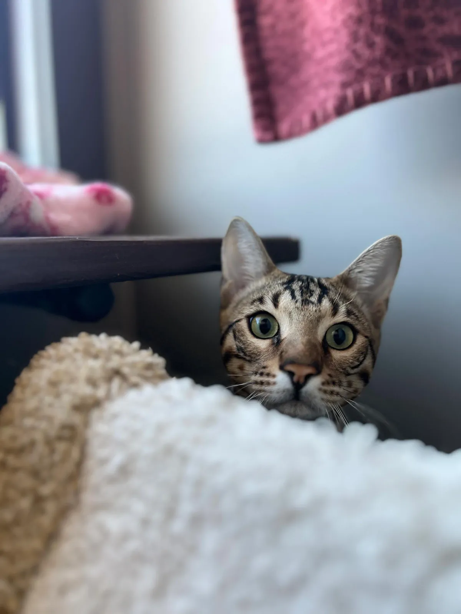

Your cat's first stay
New at Alley Cats Hotel?
When cats are boarding for the first time, they may exhibit a range of normal symptoms as they adjust to their new environment. These can include:
-
Hiding
Cats may seek out small, enclosed spaces or hide under furniture as a way to feel secure.
-
Vocalization
Increased meowing or vocal sounds can occur as a way to express stress or discomfort.
-
Changes in Appetite
Some cats may eat less than usual or refuse food altogether due to anxiety about being in a new place.
-
Litter Box Behavior
There might be changes in litter box habits, such as increased frequency or reluctance to use the box.
-
Restlessness
Cats may pace, try to escape, or display signs of agitation as they acclimate to their new surroundings.
-
Excessive Grooming
Stress can lead some cats to groom themselves more frequently, which may result in fur loss or skin irritation.
-
Behavioral Changes
Cats might become more withdrawn or exhibit changes in their usual behavior, such as being less playful or more irritable.
-
Sleeping More
Many cats may sleep more than usual as they cope with the stress of a new environment.
-
Pawing or Scratching at the Door
Some cats may try to escape their room, indicating their desire to return to familiar surroundings.
-
Increased Sensitivity
Cats may become more sensitive to handling or touch, showing signs of discomfort when being petted or approached.